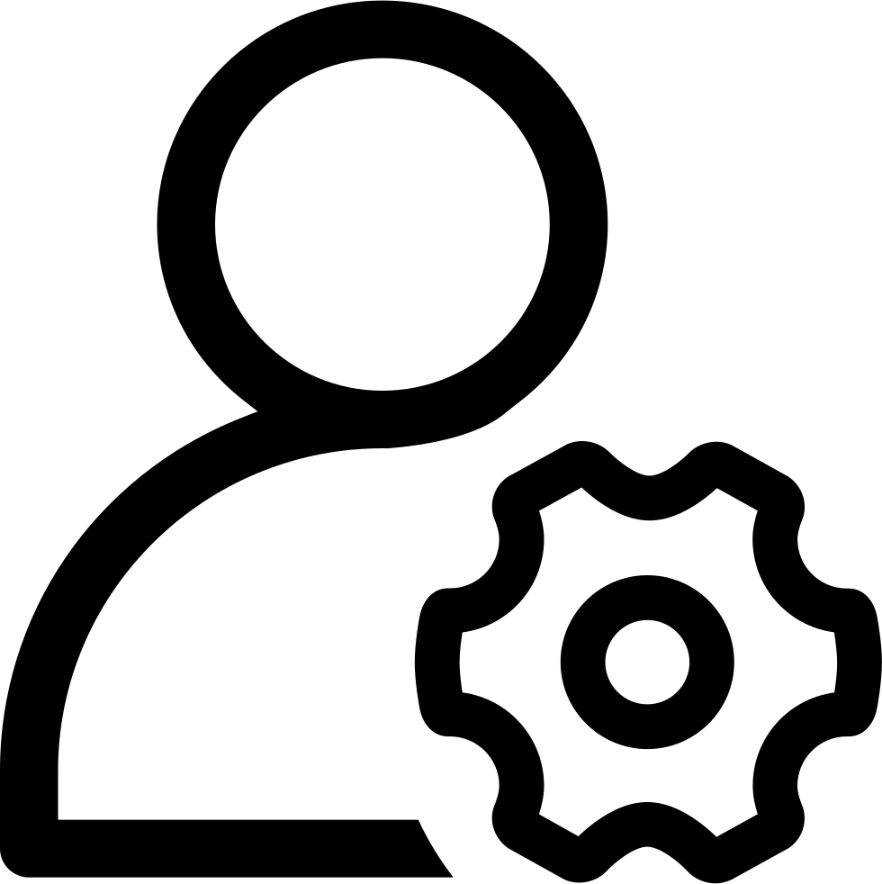

The reason we chose this project idea was because we noticed that there was no such service provided by other companies and are trying to be the first in providing this type of service for users. It is also aligned with current IT trends such as cloud computing and AI intelligence. We are aiming to create a voice assistant that provides a more personalised response with contextual understanding in which they can understand the context of follow-up questions and provide individualised experiences to users. All data will be stored in a cloud storage which provides an unlimited storage space for users. Cloud based storage also ensures data security by protecting data with end to end encryption. Any specific instructions set by the user will be stored in the cloud storage. It would show future employers that our group is significantly skilled in the usage of software programs to be able to provide customisable programming for voice assistants. Although currently there are no competitors, however, there are other voice assistants available on the market such as Apple’s Home Pod, Amazon’s Echo and Microsoft’s Cortana. We have no doubt that these companies would attempt to provide a similar service once our service is introduced to the market therefore we are aiming to solve problems that might occur. This is to reduce the impact of our competitors have on our service and ensure a smooth introduction into the market. The outcome of this project would be to personalise Alexa for the convenience of users regardless of the use for homes, businesses or schools.
School:
Voice-controlled digital assistants can be used to create an innovative learning environment as they can provide on-demand information including the timetable, dining hall hours, latest school news, and forthcoming school holidays. School administration can connect virtual courses management systems such as Blackboard or Canvas with Alexa. Alexa can then take the data and make it immediately accessible to students. This will enable students to check their grades and pending assignments using Alexa which can also be linked to car systems and iPhones, making the information available on the go.
Home:
Alexa can be useful for senior citizens especially those with illnesses or disabilities. It will allow the user to have control over various functions. By simply using their voices, older adults can ask their devices to call a relative, read e-mails, find recipes, set medication reminders, order a taxi or food from a favourite restaurant, and add items to a shopping list. It can help prolong independence and reduce social isolation
Business:
Deliver a better customer experience. For example, voice assistants will be able to offer suggestions based on a customer’s purchase history. By learning how we search, what we buy and where we shop, voice assistants and businesses will be able to predict our needs and make our lives easier.
There are a few risks that we can identify for our project. The first risk is programmers in our team are unable to code due to lack of knowledge of the programming language used. If we cannot produce the code for the project, there is also a risk of the program not being able to do what the customers ask and need. Besides that, another risk will be sudden growth in requirements. As the project progresses, issues that not identified in the early stages can create a last-minute rush to meet deadlines. Another risk that we’re afraid of is reducing the quality and functionality of the product to compensate for excessive budget.
To confirm and verify that we are successful with what was done for the project we decided to go through a test period. As we are students ourselves, we found that it will be comfortable for us to run the test within an age group of 18-24, as they are more concerned about technology and has ideas within themselves as well about technologies. We thought they could help us better if they find any flaws or think of few improvements. So, we showed them our project and demoed it to them and allowed them to give us a free minded opinion about the whole project. The idea was to let them speak about how they feel about this whole project and take the positives out of it. Seeing the amount of positivity’s within their opinion we tried to find the success rate of this project. So, during testing we had to sometimes play with Alexa without anyone noticing about it outside our campus into the public just to attract public (mostly students) attention. And this way a lot of them gathered around and come to see our project and made comments on it. Daniel mostly did the demonstration with Alexa and we others help to gather students and public of our age to see it and asked them a few questions about how they feel about the whole idea and this project. Few of us took notes about they feel about it or what they have said about this project. For example, Danielle Castillo a student of RMIT said “It’s brilliant how you guys planned to come up with such an interesting idea which will make people’s life a lot easier by making it work exactly the way they want it to”. It has been mostly satisfying for us as the testing period gone well for all of us. We came to know that finally our teamwork prevailed.

It’s quite natural when doing a group project every member of the group has a very important role to play. In our group we all kind of played a similar role, which is stand up for the task given and needs to be done within a certain amount of time. No one ever stood back. Each of us have shown talents and skills on how to cope up with given tasks though having time constraints and various other difficulties by not being dependable and working within their own time-frame and strengths. There wasn’t enough available time for us to meet time and time again to do the work together. So, each of us according to our strengths took the tasks and completed with our own time-frame waiting for none neither depending on anyone. We kept contact through social media (Facebook) and make sure everyone is doing their own work comfortably and if anyone faced any problems each of us were there to help him with our own ideas. Daniel has a great leadership mentality, throughout this whole project he led from the front. Lachlan is witty and have a sharp thinking mentality always came up with brilliant new ideas. Darren is smart punctual and has always helped to ease the pressure with his fast work. Ezra is hardworking and with that made the whole project looked beautiful to present. Norman has been doing a lot of researches based on this project and how best to work on it, so with patience he helped us describing the whole project in a much transparent way. And I had the privilege to work with these talented bunch of people for this project and tried applying my observation and communication skills throughout the whole assignment giving a reflection of our group the individual roles we had to play and most importantly testing out the whole project.